编译原理
Cpt 2 文法和语言
基本概念
形式语言是字母表上的符号按一定的规则组成的所有符号串集合；其中的每个符号串称为一个句子。
字母表∑是非空有穷集合，其元素称为符号。
符号串是由字母表∑中的符号组成的有穷序列称为 (字母表∑上的)符号串。特别地，不含任何符号的有穷序列称为空串，记为ε。
单词和源程序都是符号串
规则以某种形式表达的在一定范围内共同遵守的章程和制度；这里，指符号串的组成规则。
设a,b为两个符号串，则有以下运算:
设 A 和 B 为两个符号串集合，则有以下运算：
若 A 为任一字母表，则 A* 就是该字母表上的所有符号串的集合
文法类型
0型文法：规则左侧至少含有一个非终结符
1型文法：左侧符号串长度不大于右侧符号串长度（除了空规则），并使0型文法，又称上下文相关文法
2型文法：左侧都只有一个非终结符，且是1型文法
3型文法：如果任意 α→β∈ P，α∈ V_N ，且β只能是Ba或a（除空规则之外），则称文法G属于左线性3型文法,如果任意 α→β∈ P，α∈ V_N ，且β只能是aB或a（除空规则之外），则称文法G属于右线性3型文法。左线性3型文法和右线性3型文法，统称3型文法，也称为正规文法。
推导和二义性
如果在推导的每一步总是选择当前句型的最左（最右）边非终结符进行推导，则称这种推导过程为最左（最右）推导。最右推导，也叫规范推导。由规范推导所得的句型，叫做规范句型。规范推导的逆过程，叫做规范归约。如果一个文法存在某个句子对应至少两颗不同的语法树，则说这个文法是二义的，相当于说存在两种推导过程推出了同一个结果。
文法的二义性，并不等同于语言的二义性，尽管两者之间可能存在非必然的联系。因为二义性文法G，可能存在与之等价的无二义性的文法G′，即L(G)＝L(G′）。 如果一个语言不存在无二义性的文法，则称该语言是先天二义性的。文法的二义性判定问题是递归不可解的。即不存在这个判定问题的算法。
自下而上分析法：从输入符号串α开始，逐步进行“归约”，直至归约出文法的开始符号 S，则输入串α是文法G定义的语言的句子。否则不是
短语、简单短语和句柄
某个非终结符 A 在推导过程中推导出来的终结符串，那么这一串就叫做句型 xαy 关于 A 的短语
简单短语：某非终结符一步直接推出的一段串
句柄：最左简单短语
Cpt 3 词法分析
状态转换图
状态转换图是一张有限方向图，结点代表状态，用圆圈表示，状态之间用箭弧连结，箭弧上的标记(字符)代表射出结状态下可能出现的输入字符或字符类。一张转换图只包含有限个状态，其中有一个为初态，至少要有一个终态，终态用双圈表示。
正规式与正规集
正规表达式（简称正规式）也可以表示正规集合(语言），一个符号串集合是正规集当且仅当它能用正规式表示，正规文法所描述的是 上的正规集。正规式和正规文法是描述正规集合（即正规语言）的不同方式。
正规式和正规文法的转换
如果正规式r和文法G，有L(r)＝L(G)则称正规式r和文法G是等价的。从形如产生式 S→r 开始，按下表规则进行转换， 直到全部形如产生式， 符合正规文法之规则形式为止，可得到P和 。 反之则进行逆运算。
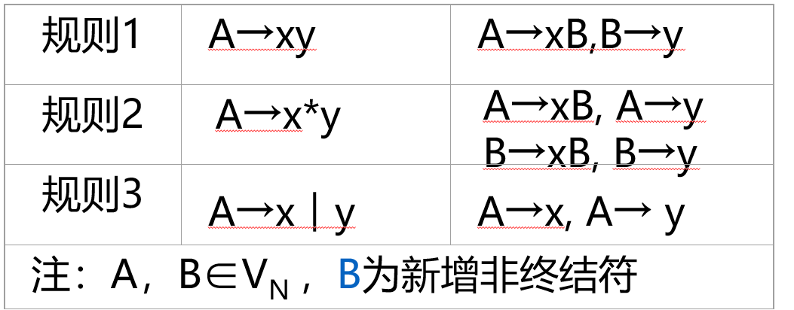
DFA和NFA
不确定的有穷自动机(NFA)：边上的标号没有限制，一个符号可出现在离开同一个状态的多条边上，ε可以做标号
确定的有穷自动机(DFA)：对于每个状态以及每个符号，有且只有一条边
两种自动机都识别正则语言，对于每个可以用正则表达式描述的语言，均可用某个NFA或DFA来识别；反之亦然。
NFA转DFA
基本思想：构造得到的DFA的每个状态和NFA的状态子集对应，DFA读入a1, a2, …, an后到达的状态对应于从NFA开始状态出发沿着a1, a2, …, an可能到达的状态集合，在算法中“并行地模拟”NFA在遇到一个给定输入串时可能执行的所有动作。
：从NFA状态s开始，只通过e转换能到达的NFA状态集合
：从T中某个状态s开始，只通过e转换能到达的NFA状态集合
：从T中某个状态s出发，通过一个标号为a的转换能到达的NFA状态集合，即
\begin{aligned} &\text{设 NFA: }M=(K,\Sigma,f,S,Z)\text{则与之等价的DFA: }M'=(K',\Sigma ',f',S',Z')\text{，其中:} \\ &\text{⑴ } K'=\rho(K)\ (\rho(K) = 2^K) \\ &\text{⑵ } \Sigma ' = \Sigma \\ &\text{⑶ } f'(q,a)=\varepsilon_\text{closure}(M(q,a)) \\ &\text{⑷ } S'=\varepsilon_\text{closure}(S) \\ &\text{⑸ } Z'=\{q \mid q\subset K',\ q \cap Z \neq \emptyset\} \\\\ &\text{具体计算步骤可以是：} \\ &\text{① 置}K'\text{为空集；} \\ &\text{② 计算}M'\text{的开始状态}S'=\varepsilon_\text{closure}(M(q,a))\text{，}S'\text{作为}K'\text{新增状态；} \\ &\text{③ 对于}K'\text{每一新增状态}q\text{，计算出每个}a \in \Sigma\text{的转换状态}p\text{，} \\ &\quad \text{即}f'(q,a)=p=\varepsilon_\text{closure}(M(q,a))\text{。如果}p \notin K'\text{，则}p\text{作为}K'\text{新增状态；} \\ &\text{④ 重复③，直到}K'\text{不再出现新增状态为止；} \\ &\text{⑤ 计算接受状态集}Z'=\{q \mid q \in K',\ q \cap Z \neq \emptyset\} \end{aligned}设字母表只包含两个 a 和b，构造一张表。首先，置第1行第1列为 求出这一列的 T_a，T_b ；然后，检查这两个 T_a，T_b ，看它们是否已在表中的第一列中出现，把未曾出现的填入后面的空行的第1列上，求出每行第2，3列上的集合。重复上述过程，直到所有第2，3列子集全部出现在第一列为止。
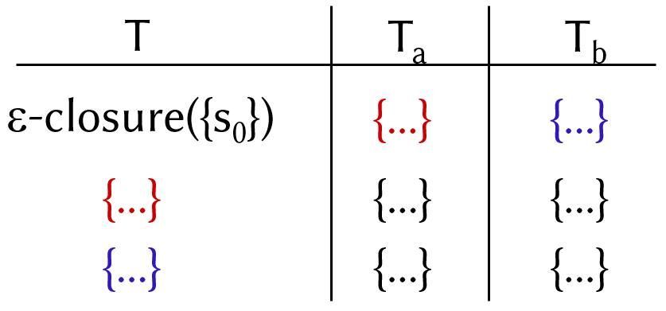
初态是 ，终态是含有原终态Y的子集
DFA最小化
计算 DFA M的等价状态，然后将等价状态合并，得到最小化的DFA M’，使用分割法：
-
状态集K划分为两个状态子集{Z，K-Z}，记为P={Z，K-Z}；
-
置重复2，直到满足 条件为止；
-
在M基础上，对于划分P的同一个状态子集中的全部状态及其相应的转换函数合并，最后所得即为最小化的M’。
NFA和正规式转化
对任何FA M，都存在一个正规式r，使得L(r)=L(M)。对任何正规式r，都存在一个FA M，使得L(M)=L(r)。
首先，在M的转换图上加进两个状态X和Y，从X用e弧连接到M的所有初态结点，从M的所有终态结点用e弧连接到Y，从而形成一个新的NFA，记为M’，它只有一个初态X和一个终态Y，从正规式到NFA的转化则反过来变化就好了。
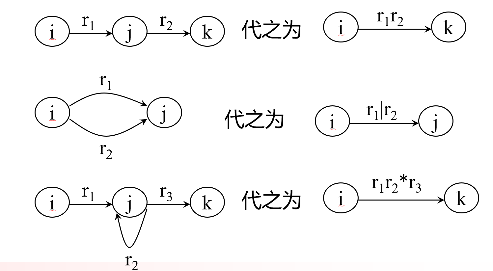
NFA和正规文法转化
对每一个右线性正规文法G或左线性正规文法G，都存在一个FA M，使得L(M)＝L(G)。对每一个FA M，都存在一个右线性正规文法GR和左线性正规文法GL，使得L(M)＝L(GR)＝L(GL)。
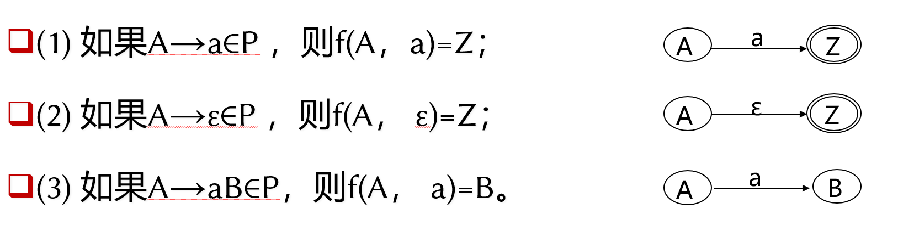
上图为右线性正规文法图，如果是左线性正规文法，只需要置换最后一条规则的AB顺序即可
Cpt 4 语法分析——自顶向下
自下而上分析法：从输入串开始，逐步进行归约，直到文法的开始符号，从树末端开始，构造语法树
自上而下分析法：它从文法的开始符号出发，反复使用各种产生式，寻找"匹配"的推导
递归下降分析法：对每一语法变量(非终结符)构造一个相应的子程序，每个子程序识别一定的语法单位，通过子程序间的相互调用实现对输入串的识别。
LL(1)文法
一个上下文无关文法是LL(1)文法的充要条件：对每个 V_N，A的两个不同产生式A→α，A→β，满足SELECT(A→α) \cap SELECT(A→β) = \emptyset ,LL(1)的含义是：
-
L：从左到右扫描输入串
-
L：分析过程是最左（右）推导
-
1：只需向右看一个符号便可以决定选择哪个产生式进行推导
为了判断LL(1)文法，有一个很重要的步骤就是找出能够推导出 的非终结符，这就需要用一个类似递归的算法来连锁推导。举个例子：
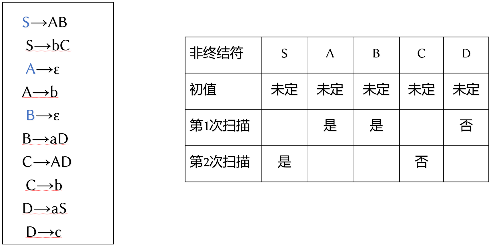
然后计算FIRST集合FOLLOW集，最后得出SELECT集，然后就可以开始分析了。如果左部相同的产生式的SELECT集的交集都是空集，则该文法是LL(1)文法。
部分非LL(1)到LL(1)的转化
若文法含有左公共因子，一定不是LL(1)文法，若文法含有直接或间接左递归，一定不是LL(1)文法。
- 提取左公共因子
设文法 G＝（V_N，V_T，P，S），形如A→αAβ 的规则称为文法G的直接递归规则。特别地，如果 α＝ε 时，则称为文法G的直接左递归规则。如果 β＝ε 时，则称为文法G的直接右递归规则。
设文法 G＝（V_N，V_T，P，S） ，如果存在推导 ，则规则A→α称为文法G的间接递归规则。特别地，如果λ＝ε时，则称为文法G的间接左递归规则。如果μ＝ε时，则称为文法G的间接右递归规则。
从定义可得到，直接递归规则可以认为是特殊的间接递归规则。含有递归规则的文法。称为递归文法。
-
消除直接左递归
-
消除间接左递归：先把间接左递归变为直接左递归，再将直接左递归化为右递归。
不确定的自顶向下分析法
引起回溯的原因：
-
由于左部相同的产生式的右部First集交集不为空
-
由于左部相同VN的右部能推导出ε，且该VN的Follow集中含有其右部First集的元素。
-
由于文法中含有左递归
递归子程序法LL(1)分析
递归子程序法是将每个非终结符编写成一个递归子程序，即语法分析程序的每个递归子程序完成选择规则、推导和匹配的功能。
在递归子程序中，选择规则的实现步骤是将输入串“下一个符号”逐个与A规则的选择集进行判定，“下一个符号”属于哪个选择集，便选择相应规则推导。只有当“下一个符号”不属于任何选择集时，报告语法错误。
优点：简单、直观、易于构造。
缺点：对文法要求高，必须满足LL(1)文法，由于递归调用多，速度慢，占用空间多
预测分析法LL(1)分析
将输入串视同以串末端为底的栈I，输入串未匹配部分为栈的内容，这个栈称为“输入栈”；推导过程产生的句型未匹配部分，依自右向左顺序，也存放在另一个称为栈S中，这个栈称为“分析栈”；再将规则选择集，存放在一个非终结符为行、终结符为列和元素为规则的二维表M中，这个表称为“分析表”。下面是生成的分析表示例：
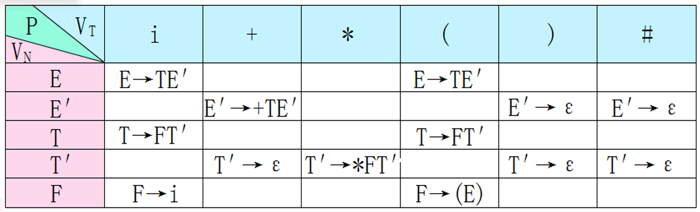
Cpt 5 语法分析——自底向上
跳过了
Cpt 6 LR分析
移进-规约法，主要由总控程序、分析栈和分析表三个部分组成。接下来的部分主要聚焦于如何构造分析表。
发生移进的时候，将接受的符号压入符号栈，同时将ACTION下对应的状态压入状态栈。
发生规约的时候，首先将规约的右部符号串从符号栈和状态栈中弹出，然后根据当前栈顶对应的状态的GOTO，以及规约的左部符号，向状态栈中压入对应的状态，同时向符号栈中压入规约的左部符号。
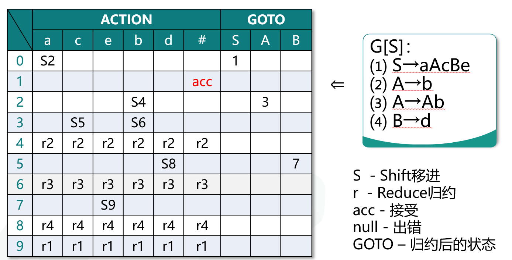
LR(0)
将符号串的任意含有头符号的子串称为前缀。特别地，空串ε为任意串的前缀。到句柄结尾为止的那个前缀，叫可归前缀，不超过句柄末尾的前缀，都叫活前缀。
第一步是构造状态，第二步是构造状态变迁关系。
构造状态
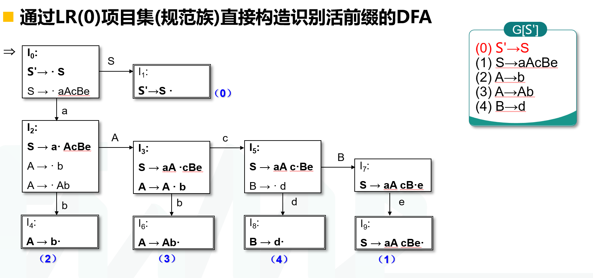
$$ \begin{aligned} &\text{设}I\text{是文法}G\text{的LR(0)项目子集，如上图} \\\\ &\text{MOVE}(I,X)\text{定义如下：} \\ &\text{MOVE}(I,X) = \{ A\to\alpha X\cdot\beta \mid A\to\alpha\cdot X\beta\in I \} \\ &\text{例：}I_0=\{S'\to \cdot S,\ S \to \cdot aAcBe \} \\ &\text{MOVE}(I_0, a)=\{ S\to a\cdot AcBe \} \\\\ &\text{closure}(I)\text{定义如下：} \\ &1.\ I \subset \text{closure}(I) \\ &2.\ \{ B\to\cdot\gamma \mid A\to\alpha\cdot B\beta\in\text{closure}(I) \} \subset \text{closure}(I) \\ &3.\ \text{重复2.，直到closure}(I)\text{不再扩大为止。} \\ &\text{例：}I= \{S\to a \cdot AcBe \} \\ &\text{closure}(I)=\{S\to a \cdot AcBe,\ A\to\cdot Ab,\ A\to\cdot b \} \\\\ &\text{识别活前缀DFA } M=(K,\Sigma, f , S , Z)\text{，其中：} \\ &K \subseteq \rho(\text{LR(0)项目集}) \\ &\Sigma = V_N \cup V_T \\ &f(I,X) = \text{closure}(\text{Move}(I,X)),\ I \in K,\ X \in V_N \\ &S = \text{closure}(S'\to\cdot S) \\ &Z = \{q \mid q \in K,\ q \text{ 含有归约项目} \} \end{aligned} $$填表
\begin{aligned} &\text{对每一个LR(0)项目，依据下列情况分别填分析表：} \\ &\text{移进项目 }A\to\alpha\cdot a\beta \in I_k\text{，}f(I_k,a)=I_j\text{，置ACTION}[k,a]\text{为}S_j\text{；} \\ &\text{归约项目 }A\to\alpha\cdot \in I_k\text{，}A\to\alpha\text{标号为}i\text{， 置ACTION}[k,a]\text{为}r_i \text{; } a\in(V_T \cup \{\#\}) \\ &\text{接受项目 }S'\to S\cdot \in I_k \text{，则置ACTION}[k,\#]\text{为acc；} \\ &\text{待约项目 }A\to\alpha\cdot X\beta\in I_k\text{如果}f(I_k,X)=I_j \text{，}X\in V_N \text{，置GOTO}[k,X]\text{为}j\text{；}\\ &\text{凡是没能填入分析表元素ACTION}[k,a]\text{和GOTO}[k,a]\text{置为}e\ t\ (t\text{为错误编号})。\\ \end{aligned}LR(0)冲突
移进-归约冲突: 项目集中同时出现移进和归约项目： 归约-归约冲突：项目集中同时出现多个归约项目：
如果文法G的LR(0)项目集规范族不存在移进-归约冲突或归约-归约冲突的项目集，则文法G称为LR(0)文法，G可采用LR(0)分析法，且G是无二义性的。
SLR(1)文法
不是 LR(0) 文法时，可以采用简单地向后看 1 个输入符号的方法，解决移进-归约冲突或归约-归约冲突。这种分析方法称为 SLR(1) 分析法。SLR(1)分析表的构造方式和LR(0)唯一的区别就是：
A→α· ∈ I_k，A→α标号为i，置ACTION[k,a]为r_i ; a∈FOLLOW(A)
假设文法的 LR(0) 项目集规范族中有一个并存移进-归约冲突和归约-归约冲突的项目集 ：
若满足 ，则可按照下一个字符来决定去向。
设文法 的 LR(0) 项目集规范族 中任意含有 个移进项目和 个归约项目的冲突项目集 的一般形式为：
如果移进符号集： 和
两两相交均为空集，则文法 G 称为 SLR(1) 文法。
SLR(1) 文法，无二义性， ，和LR(0)相比，SLR(1)多出了规约字符检测，而不是像LR(0)那样，只要进入到规约状态就一定要规约。
SLR(1)的问题
SLR只是简单地考察规约时的FOLLOW集合，但是不考虑在指定状态下的FOLLOW集合和文法整体的FOLLOW集合是否一致，简而言之条件必要而不充分。
LR(1)
附加搜索符( )的LR(0)项目称为LR(1)项目。形如 的项表示仅在下一个输入符号等于a时才可以按照 进行归约，这样的a的集合总是FOLLOW(A)的子集，通常是真子集。搜索符可以直观理解为“当前这条规则在这个具体使用位置上的局部后文”，不是像 FOLLOW 那样的全局后文；它主要在 closure 展开非终结符时，通过看后面的 和原搜索符来计算，即 ，a为展开前的规则搜索符。一旦规则被展开，这条规则的搜索符就不会变化了。
设 是文法 的 LR(1) 项目子集，则 定义如下：
设 是文法 的 LR(1) 项目子集， 定义如下：
-
-
-
重复第 2 步，直到 不再扩大为止。
设文法 ，等价改写成文法 ： 其中：
则识别活前缀的 DFA：
如果移进符号集{ a1 ， a 2 ，··· ，αm}和搜索集S1、 S2、··· 、S n 两两相交均为空集,则文法G称为LR(1)文法。如果文法G是LR(1)文法，则G是无二义性的，
LALR(1)
如果采用同心项目集合并方法，进行合并后的文法G的LR(1)项目集规范族，没有LR(1)项目冲突，则称文法G为LALR(1)文法。LALR(1)无二义性，且
形式上与LR(1)相同，大小上与LR(0)/SLR相当，分析能力介于SLR和LR(1)二者之间，LR(0) < SLR(1) < LALR(1) < LR(1)，合并后的向前搜索符集合仍为FOLLOW集的子集。
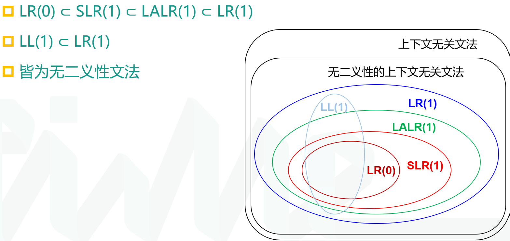
Cpt 7 语法制导的语义计算
属性文法是给每一个产生式附上语义规则，而翻译模式更进一步，规定了语义动作被调用的时机。
属性文法
综合属性：通过自身属性和产生式右部属性值计算，产生式左部符号的综合属性由自身和产生式右部符号的属性计算得出，父节点的综合属性由子结点的属性和父结点自身的属性计算得出
继承属性：根据自身属性和产生式自身左边符号的属性计算，根据父结点和兄长节点的属性计算子结点的继承属性，自上而下传递信息
语义规则建立了属性之间的依赖关系，在对语法分析树节点的一个属性求值之前，必须首先求出这个属性值所依赖的所有属性值。依赖图是一个描述了分析树中结点属性间依赖关系的有向图，分析树中每个标号为X的结点的每个属性a都对应着依赖图中的一个结点，如果属性X.a的值依赖于属性Y.b的值，则依赖图中有一条从Y.b的结点指向X.a的结点的有向边。最后，通过某个拓扑排序可以得出具体的计算顺序，比如：
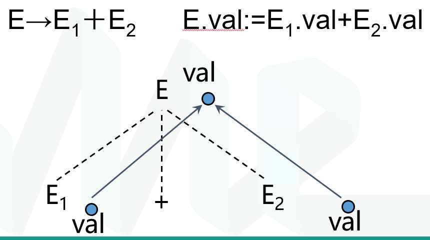
实践中，只使用能够保证对每棵语法分析树都存在一个属性求值顺序的SDD，因为它们不允许产生带有环的依图
可以在自顶向下或自底向上语法分析的同时实现语义计算，分为：S-属性文法，L-属性文法
S-属性文法和L-属性文法
S：仅含综合属性的属性文法，可以在自底向上分析中计算，分析过程：采用LR分析，规约时应用计算
L：当且仅当它的每个属性要么是一个综合属性，要么是满足如下条件的继承属性：假设存在一个产生式 ，其右部符号 的继承属性仅依赖于下列属性：
- A的继承属性
- 产生式中Xi左边的符号 的属性
- 自身的属性，且Xi 的全部属性不能在依赖图中形成环路
分析过程：语法分析构建语法树，再深度优先，遍历语法树完成语义计算
翻译模式
S-翻译模式：仅含综合属性，语义动作集置于产生式右端的末尾。 L-翻译模式：包含综合属性，还可以包含继承属性。满足下列条件：
- 产生式右部符号的继承属性，其语义计算必须位于该符号前，且其语义动作不访问右边符号的属性；
- 产生式左部符号的综合属性只有在它所引用的所有属性都计算出来后才能计算。属性计算通常放在产生式右端的末尾；
S-翻译模式的自底向上分析
常采用LR的自底向上的分析法，和S属性文法类似，只是增加了一个语义栈用来容纳额外的属性。
L-翻译模式的自顶向下分析
如果是递归子程序，那么就直接在递归子程序的方法中完成语义属性的计算即可。如果不使用的话，就需要使用语义栈来完成非递归的自顶向下分析：从文法起始符号最左推导，根据下一符号和select集选择产生式；产生式右部和语义动作逆序进栈；综合属计算得出结果后退栈。
L-翻译模式的自底向上分析
从翻译模式中删除嵌入在产生式中间的语义动作，用不同的非终结符代替，并加入这些非终结符推导出空串的规则，然后将属性计算放到新增规则的最后。从而“消去”了继承属性，从而可以使用类似S-翻译模式的自底向下分析。也就是说，原来对某个继承属性的访问变为了对综合属性的访问。
具体的流程就是：该写文法，生成LR分析图，LR分析表，栈语义动作，然后按照正常的LR分析的过程来，只不过是在规约的时候，弹出右部之前，执行代码段。
Cpt 8 静态语义分析和中间代码生成
符号表
开作用域与闭作用域：该点所在的作用域为当前作用域，当前作用域与包含它的程序单元所构成的作用域称为开作用域，即嵌套重叠的作用域，不属于开作用域的作用域称为闭作用域
常用的可见性规则：在程序的任何一点，只有在该点的开作用域中声明的名字才是可访问的若一个名字在多个开作用域中被声明，则引用该名字最近的声明作为该引用的解释
单符号表组织：所有嵌套的作用域共用一个全局符号表，每个作用域有一个作用域号，仅记录开作用域中的符号。当某个作用域成为闭作用域时，从符号表中删除该作用域中所声明的名字
静态语义分析
使用翻译模式来将属性嵌入到语义分析中
中间代码生成
AST生成
通过Flex+Bison生成了AST，同时需要进行优化，避免生成AST树层数过高，不要照搬文法翻译，而是尽可能地将层次结构扁平化。
三地址码
常用三地址码：
- x := y op z (op,y,z,x)
- x := op y (op,y,-,x)
- x := y (=,y,-,x)
- L : （定义标号 L）
- goto L 无条件跳转至标号 L） （jmp,-,-,L)
- if x goto L (jnz,x,-,L)
- if x rop y goto L (jrop,x,y,L)
赋值语句的翻译
语义属性
-
id.place : id 对应的存储位置
-
A.place : 用来存放 A 的值的存储单元的地址
-
A.code : 对A 求值的 TAC 语句序列
-
S.code : S 的 TAC 语句序列
语义函数/过程
-
gen() : 生成一条 TAC 语句
-
newtemp() : 在符号表中新建一个从未使用过的名字，并返回地址
-
|| TAC 语句的链接运算
声明语句翻译
说明语句的翻译 ： L-翻译模式
语义属性
-
id.name : id 在符号表中的名字
-
T.type : 类型属性
-
T.width，V.width : 数据宽度（字节数）
-
V.offset, L.offset : 列表中第一个变量的偏移地址
-
L.type : 变量列表被申明的类型
-
L.width: 变量列表被申明类型所占的字节数
-
L.num : 变量列表中变量的个数
语义函数/过程
- enter (id.name, t, o) ： id.name 表项的 type 域置为 t，offset 域置为 o
数组元素引用翻译
设A为n维数组，按行存放，每个元素宽度为w
为第i维的下界
为第i维的上界
为第i维可取值的个数( )
base为A的第一个元素相对地址
元素 相对地址公式
D = base + V – C
布尔表达式翻译
短路法优化不必要的求值
属性与语义计算的设计
-
E.code, E.place
-
newtemp, gen(), ||
-
语义函数newlabel，返回一个新的符号标号
对布尔表达式E，设置两个继承属性
-
E.true是E为‘真’时控制流转向的标号
-
E.false是E为‘假’时控制流转向的标号
控制语句翻译
S → if E then S1
S → if E then S1 else S2
S → while E do S1
S → S1; S2
属性与语义计算 E.code, S.code, E.true, E.false, gen(), newlabel, || 继承属性：S.next
L 翻译模式常用：拉链与代码回填
相比S 翻译模式常用的代码拼接，L翻译模式常用拉链法和代码回填：生成一个跳转指令时，暂时不指定该跳转指令的目标标号。这样的指令都被放入由跳转指令组成的列表中。同一个列表中的所有跳转指令具有相同的目标标号。等到能够确定正确的目标标号时，才去填充这些指令的目标标号。
链属性
- E.truelist : 链表中的元素表示一系列跳转语句的地址，这些跳转语句的目标标号是体现布尔表达式 E 为“真”的标号
- E. falselist : 链表中的元素表示一系列跳转语句的地址，这些跳转语句的目标标号是体现布尔表达式 E 为假的标号
- S. nextlist :链表中的元素表示一系列跳转语句的地址，这些跳转语句的目标标号是S 之后的下条TAC语句的标号
- S.breaklist: 跳出直接包围S的while语句的下条TAC语句标号
- M.gotostm: 处理到M时下一条待生成语句的标号。
语义动作
-
makelist(i) : 创建只有一个结点 i 的列表，i是一条目标TAC 语句的标号
-
merge(p1,p2) : 连接两个链表 p1 和 p2 ，将p2链接在p1后面，返回合并后的链首
-
backpatch(p,i) : 将链表 p 中每个元素所指向的跳转语句的标号置为 i
-
nextstm : 下一条TAC 语句的地址
-
emit (…) : 输出一条TAC 语句，并使 nextstm 加1
Cpt 9 运行时存储组织
栈帧：
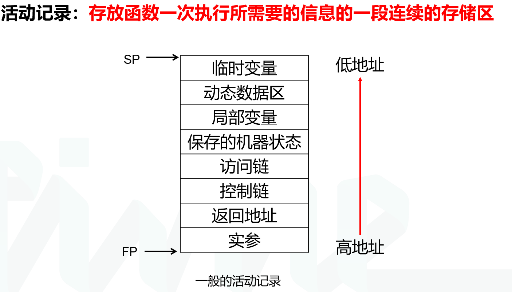
定长数组直接放元素，变长动态数组先放首元素地址，再逆序放元素，也就是说高地址到低地址分别放：a[x],a[x-1],a[x-2]…a[0]
参数传递： k<=4/8个参数用寄存器,余下放栈上(ARM32/64)
返回值：寄存器
返回地址：call指令压入栈/通过寄存器传递更高效
Cpt 10 中间代码优化
优化思路
- 提前计算常量
- 用低代价运算替代高代价运算（乘法->位运算）
- 消除重复计算：复写传播，减少赋值；相同的值赋予相同的编号（变量名）；公共子表达式删除；消除冗余计算
- SIMD
- 循环不变量外提，归纳变量计算强度削弱/删除，循环展开，重组
- 内联，不可达代码/死代码删除，if/循环简化
基本块、流图和循环
基本块
一个顺序执行的语句序列，只有一个入口语句和一个出口语句。执行时只能从入口语句进入，从出口语句退出。基本块是一个最大的不可分割的、连续的三地址指令序列，这个块中的指令要么全执行，要么全不执行。（认准这个定义就行）
流图
流图：结点是一些基本块，从基本块B到基本块C之间有一条边当且仅当基本块C的第一个指令可能紧跟在B的最后一条指令之后执行
公共子表达式：如果表达式x op y先前已被计算过，并且从先前的计算到现在，x op y中变量的值没有改变，那么x op y的这次出现就称为公共子表达式。通过重定向公共子表达式可以删去冗余的计算，注意一定要是任何可能的路径上都没有值改变。
删除无用代码：通过复制传播（在复制语句x = y之后尽可能地用y代替x），从而可能创造无用代码(死代码，计算结果永远不会被使用的语句）
对于一个变量i ，如果存在一个正的或负的常数c使得每次x被赋值时它的值总增加c ，那么i就称为基本归纳变量：i = i + c，j = k*i + c ，j为归纳变量，且与i同族。归纳变量可以通过在每次循环迭代中进行一次简单的增量运算(加法或减法)来计算，从而将乘法运算化简为代价更低的加法运算。在沿着循环运行时，如果有一组归纳变量的值的变化保持步调一致，常常可以将这组变量删除为只剩一个。
循环
在程序流图G中，对于任意一个结点序列α，如果在结点序列之外存在一个结点指向结点序列中的结点V，或者结点序列中的结点V是程序首结点，则称结点V 为结点序列α的入口结点
自然循环是在程序流图中，具有下列性质的结点序列L：是强连通子图(任意两节点间必有通路,且通路上的节点都属于L)；有且仅有一个入口结点
在流图中，对任意两个结点m和n，如果从首结点出发到达结点n的任一通路，都要经过结点m，则称结点m是结点n的必经结点或支配结点，记为m DOM n。
流图中结点n的所有必经结点集合，称为结点n的必经结点集，记为D(n)。显有：n DOM n, 首结点 DOM n。计算D(n)的时候，需要不断的进行类似闭包的计算，首先D(n) = { n }，然后将带有指向n的边的所有节点的支配集之间做并集然后和D(n)取交集，重复直到没有变化为止。
假设n→m是流图G的一条边，如果存在m DOM n，则称n→m是流图G的回边
由此引入自然循环，一种适合于优化的循环：有唯一的入口节点，称为首结点，支配循环中所有节点，且至少有一个条会犯首结点的路径。给定一个回边n → d，该回边的自然循环为：d，以及所有可以不经过d而到达n的结点。d为该循环的首结点。
回边的自然循环计算： P(n)是n的所有前驱
⑴ loop←{d,n}，S←{n}；
⑵ S←( ∪ P(q)| q∈S )－loop；
⑶ loop←loop ∪ S；
⑷ 重复⑵、⑶，直到所有loop不再变化为止。
数据流分析
每条IR语句s将一个input state转换成一个新的output state，数据流信息分别与语句s的前 (后)点相关联
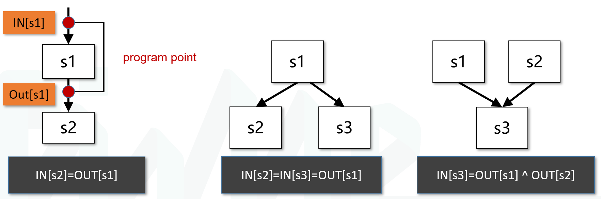
到达-定制分析
定值：变量v的定值是(可能)将一个值赋给v的语句(v = …)
到达定值：存在一条从定值d到程序点p的路径，且在此路径上d没有被“杀死”，则称定值d到达程序点p，意即在此路径上没有其它定值d’对变量v重新定值。
定值“产生”(gen)一个u的定值d，并“杀死”(kill)其它对u的定值。fd (x) = gend∪(x-killd)，gend – 语句d生成的定值集合 {d}，killd – 语句d杀死的定值集合，也就是程序中剩下的对u的赋值。
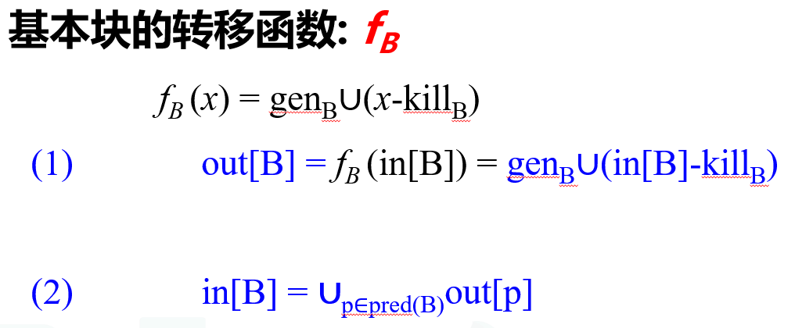
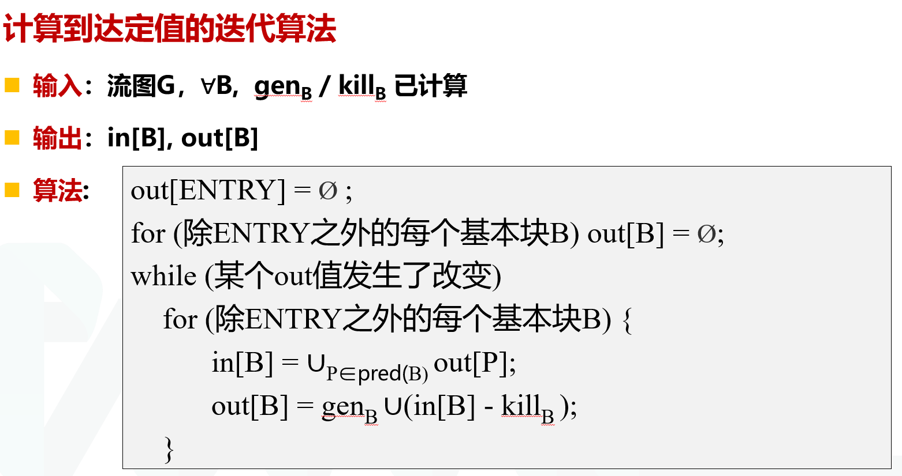
UD链 -引用的定值链
点u引用a, 能到达点u的a的所有定值点的全体称为a在点u的引用-定值链。基本块B中a的引用点u之前有a的定值，那么a的最后一次定值点d是该引ud链的唯一定值点: {d}，基本块B中a的引用点u之前没有a的定值，那么in[B]中a的所有定值点都能到达u, 它们即A在点u的ud链。
活跃变量：对于程序中的变量v和某点p: 流图中存在一条从p开始的通路引用v在点p的值 ，则称v在点p是活跃的(live)，否则是不活跃的(dead)
删除无用赋值：如果v在点p的定值在基本块内所有后继点都不被引用，且v在基本块出口之后又是不活跃的，那么v在点p的定值就是无用的
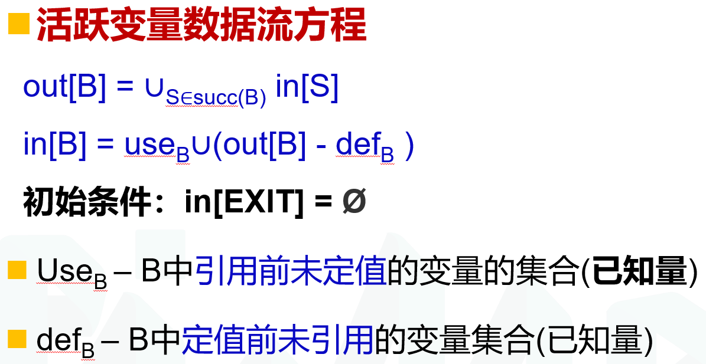
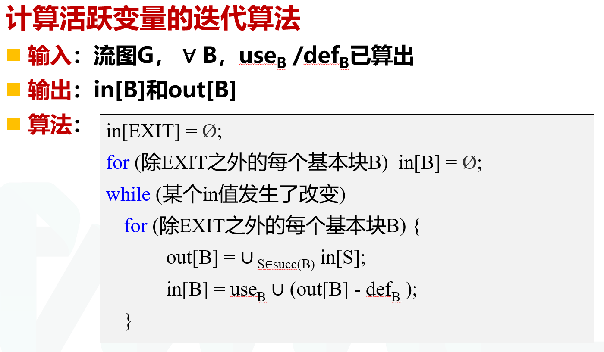
活跃变量数据流和到达定值分析的方向反过来了
DU链定值-引用链
设变量x有一个定值d，该定值所有能够到达的引用u的集合称为x在d处的定值-引用链，简称DU链
可用表达式计算
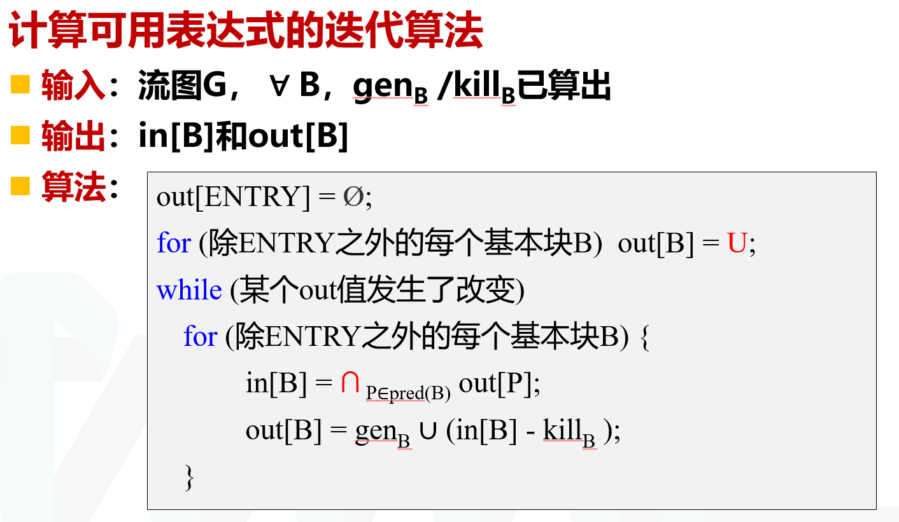